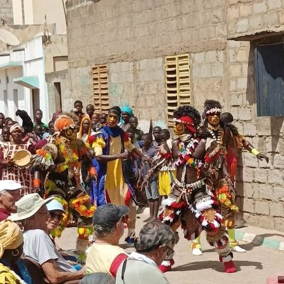
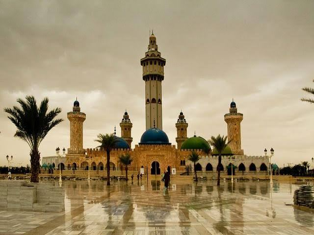
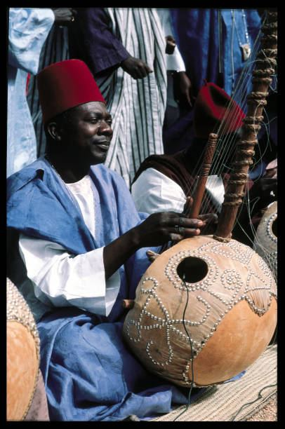
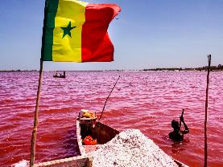
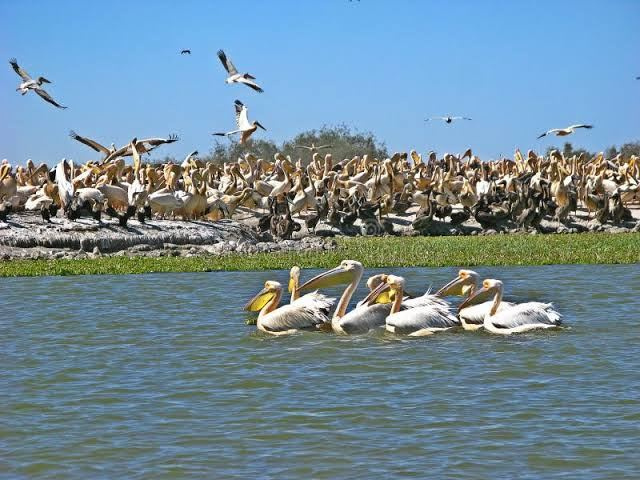
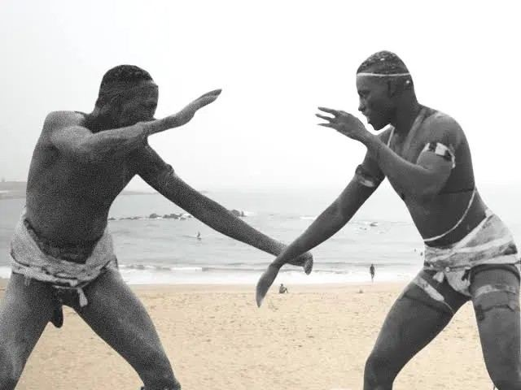
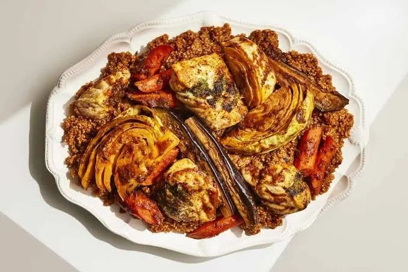

O Senegal fica na costa atlântica da África Ocidental, tem cerca de 18 milhões de habitantes e área de aproximadamente 197 mil km², um pouco menor que o estado do Paraná. A capital é Dakar. É uma república presidencialista com um Parlamento de câmara única (165 deputados). Os dados oficiais mais usados para etnias, religiões e idiomas vêm do CIA World Factbook e de censos nacionais, e variam um pouco de fonte para fonte.
2.1Formação dos povos originais e do país atual

Pré-história e antiguidade. A região foi habitada desde o Paleolítico. Dois legados marcantes aparecem na lista da UNESCO: os círculos de pedra da Senegâmbia (megálitos funerários erguidos ao longo de séculos, até cerca do século XVI) e os montes de conchas do delta do Saloum, formados por comunidades que viviam da coleta de moluscos e da pesca.
Tekrur e os impérios do Sahel. O reino de Tekrur (Takrur), no vale do rio Senegal, aparece em manuscritos árabes do século IX e viveu seu auge nos séculos X e XI, em paralelo ao Império de Gana. É o primeiro estado organizado do território e está ligado aos ancestrais dos povos Pulaar/Toucouleur. O Islã chegou a ele no século XI, na onda dos Almorávidas, que também contribuíram para derrubar Gana. Depois, o Império do Mali (séculos XIII e XIV) estendeu sua influência para o oeste e fez de Tekrur e dos reinos wolof seus tributários.
O Império Jolof (séculos XIII–XVI). Confederação de reinos wolof e serer, com tradição oral que atribui a fundação a Ndiadiane Ndiaye. Era uma união voluntária de estados, com um sistema político complexo e estratificado em castas. Seu enfraquecimento veio da perda de domínio sobre as zonas costeiras, que passaram a comerciar diretamente com europeus. Em 1549, na batalha de Danki, o governante de Kajoor liderou a revolta que o desintegrou. Surgiram então reinos rivais: Kajoor (Cayor), Baol, Waalo, Sine, Saloum e, no vale do rio, o Fouta Toro. Na Alta Casamance e na Gâmbia, o reino mandinga de Kaabu teve influência até o século XIX.
Do mapa colonial ao país. As fronteiras atuais foram desenhadas pela França, que fez de Saint-Louis e depois de Dakar centros de poder na África Ocidental Francesa. O Senegal se tornou autônomo em 1958, formou com o Sudão Francês a Federação do Mali (1959) e, em 20 de junho de 1960, a Federação foi reconhecida como independente (o acordo de transferência de poder com a França foi assinado em 4 de abril de 1960). A Federação se desfez em 20 de agosto de 1960, quando Senegal e Mali declararam independência separadamente. Léopold Sédar Senghor foi eleito presidente em 5 de setembro de 1960. A data nacional é 4 de abril, em referência a esse acordo.
2.2Principais etnias

- Wolof 40%
- Pulaar 27%
- Serer 16%
- Outros 17%
Existem cerca de 20 grupos étnicos. Estimativa de 2019 (CIA World Factbook): Wolof 39,7%, Pulaar 27,5% (inclui Peul/Fula e Toucouleur), Serer 16%, Mandinka 4,9%, Jola 4,2%, Soninke 2,4%, outros 5,4% (inclui pequenas comunidades de europeus e libaneses). Há também Lebou (subgrupo wolof da península de Cap-Vert), Bassari, Bedik, Mouros, Manjak, Balante e outros.
- Wolof: maioria nas cidades e no centro-norte. Foram os fundadores do Jolof, são majoritariamente muçulmanos (Mourides e Tijanis) e sua língua virou língua franca, fenômeno chamado de "wolofização".
- Pulaar (Peul e Toucouleur): pastoralistas e agricultores do norte, do vale do rio Senegal e do leste. Foram dos primeiros a se islamizar e deram líderes religiosos e políticos, como El Hadj Omar Tall.
- Serer: centro-oeste (Sine e Saloum). Agricultores, pescadores e comunidade com forte tradição religiosa própria. Têm uma parcela significativa de cristãos. Senghor era serer.
- Jola (Diola): Casamance, cultivadores de arroz, com organização social pouco hierárquica e identidade étnica muito valorizada.
- Mandinka e Soninke: herdeiros dos impérios do Mali e de Gana. Os mandingas estão no sul e sudeste, os soninkês no leste, com forte tradição migratória.
A sociedade tradicional de vários povos (principalmente wolof, serer e pulaar) tinha estratos hereditários: nobres, artesãos e griots (casta dos géwël), e descendentes de pessoas escravizadas. Esses vestígios ainda aparecem nos sobrenomes e nos casamentos. Entre os grupos existe o cousinage à plaisanterie (parentesco por gracejo): uma tradição de se provocar com humor e evitar conflitos, que contribui para a convivência pacífica. Os casamentos entre etnias são comuns.
2.3Religião

Religiões originais. Antes do Islã predominavam religiões locais, com culto a ancestrais, espíritos e divindades criadoras. Os Serer reconhecem Roog como ser supremo e mantêm rituais próprios; os Jola chamam o deus supremo de Emitai. Sobre as crenças pré-islâmicas dos wolof pouco se sabe: não há registros orais nem escritos que as detalhem. Hoje as religiões tradicionais são minoritárias (menos de 1% da população) mas influenciam rituais de nascimento, casamento e morte e práticas de proteção (gris-gris).
Islã. Chegou no século XI com os Almorávidas. Expandiu-se nos séculos seguintes, em parte por movimentos reformistas e "jihads" lideradas por marabouts (como a do Almamato do Fouta Toro, no século XVIII, e as de Maba Diakhou Bâ e El Hadj Omar no século XIX). Hoje cerca de 97% da população é muçulmana (maioria sunita, de rito maliquita) e organizada em irmandades sufis:
- Tijaniyya: a maior. Tem centros em Tivaouane e Kaolack.
- Mouridismo (Muridiyya): fundada por Cheikh Amadou Bamba no fim do século XIX. Tem a cidade santa de Touba e o Grand Magal, peregrinação anual que reúne milhões. Valoriza o trabalho como forma de oração.
- Qadiriyya e Layène, menores.
As irmandades têm grande peso social e político. Os líderes (os califes e marabouts) são ouvidos por presidentes e candidatos, e muitos analistas ligam esse sistema à estabilidade do país.
Religião do colonizador. A França levou o cristianismo católico: cerca de 3% hoje, concentrado entre Serer, Jola, na Casamance e em Dakar. Há peregrinações importantes, como a de Popenguine. A França também levou o princípio da laicidade, mantido pelo Estado senegalês. Casamentos e convívio entre muçulmanos e cristãos são comuns, e Senghor, católico, governou um país de maioria muçulmana por 20 anos.
- Islã~97% da população, em irmandades sufis (Tijaniyya e Mourides)
- Cristianismo~3% de católicos; Senghor, católico, governou por 20 anos
2.4Idioma
Línguas originais. O Senegal tem mais de 20 línguas, quase todas do ramo atlântico da família Níger-Congo. Seis são reconhecidas como línguas nacionais: wolof, pulaar, serer (sereer), jola (diola), mandinka e soninke. O wolof é a língua franca: muitos senegaleses que não são wolof o falam. Já se escreveu em caracteres árabes (wolofal), uso ainda presente em contextos religiosos. Também há o árabe, usado no ensino religioso.
Língua do colonizador. O francês é o idioma oficial, usado na administração, nos tribunais, no ensino superior, na imprensa e na diplomacia. O sistema escolar foi desenhado para ensiná-lo, e o resultado é um país multilíngue: muitos falam duas ou três línguas e fazem code-switching entre wolof e francês (o "wolof urbano" de Dakar tem muitas palavras francesas). Em Ziguinchor e na Casamance ainda há influência do crioulo de base portuguesa.
2.5Economia: principais produtos

- Mineração: ouro (uma das principais exportações, com forte alta de preço em 2025), fosfatos e ácido fosfórico, zircônio, sal e calcário para cimento.
- Hidrocarbonetos: o campo offshore de Sangomar (operado pela australiana Woodside com a estatal Petrosen) começou a produzir em junho de 2024: 16,9 milhões de barris em 2024 e 36,1 milhões em 2025. O projeto de gás Grande Tortue Ahmeyim (GTA), compartilhado com a Mauritânia, entrou em operação no início de 2025.
- Pesca: pilar de renda e de alimentação. A pesca artesanal, com pirogues coloridas, é enorme, e há tensões com frotas industriais estrangeiras.
- Agricultura: amendoim (cultura de exportação histórica, impulsionada pelos franceses), milho-miúdo, arroz, milho, mandioca, feijão-fradinho, melancia e algodão.
- Turismo, serviços e remessas: praias (Saly, Cap Skirring), Gorée, Saint-Louis, o Lago Retba e parques. Remessas da diáspora (França, Itália, Espanha, EUA) são uma fonte importante de renda.
- Moeda e blocos: franco CFA (XOF), usado na UEMOA/WAEMU, com paridade fixa com o euro.
As principais exportações em 2024 incluíram ouro (cerca de 15% do total), derivados de petróleo, ácido fosfórico e peixe congelado. O Mali, a Suíça, a China e a Índia estão entre os principais compradores. O PIB per capita ficou perto de US$ 1.760 em 2024. A entrada de petróleo e gás acelerou o crescimento, mas o país enfrenta dívida pública elevada e negociações difíceis com o FMI, o que está no centro da crise política atual.
2.6Características culturais mais marcantes

- Teranga: palavra wolof para hospitalidade e generosidade; um valor nacional e o nome da seleção ("Leões da Teranga"). Receber bem, dividir a refeição e saudar longamente são regras sociais.
- Griots (géwël): guardiões da história oral, da genealogia e da música. Tocam kora, xalam e a família de tambores sabar e tama.
- Música: mbalax, que mistura ritmos sabar com pop, jazz e salsa e foi popularizado por Youssou N'Dour (o sucesso "7 Seconds", com Neneh Cherry, foi dos anos 1990), além de Baaba Maal, Ismaël Lô e Orchestra Baobab. Saint-Louis tem um dos festivais de jazz mais tradicionais da África.
- Moda: grand boubou, bazin e tecidos tingidos; a Semana de Moda de Dakar. Os homens e mulheres de Dakar são conhecidos pela elegância (a cultura sapeur é mais associada ao Congo).
- Ritmo social: o chá ataya, servido em três rodadas (forte, doce e suave), é um ritual de conversa. O sargal e o diom (honra e dignidade) regulam relações.
- Cousinage à plaisanterie: a brincadeira ritual entre etnias, já citada.
- MbalaxYoussou N’Dour: tambores sabar + música global
- CinemaOusmane Sembène, pai do cinema africano: A Garota Negra (1966)
- Atayao chá em 3 rodadas: conversa em forma de ritual
2.7Processo de colonização e de reconquista

Contatos e tráfico (séculos XV–XVIII). Os portugueses chegam à costa em 1444. Holandeses (que tomaram Gorée em 1617), ingleses (que ocuparam Gorée e Saint-Louis em várias ocasiões) e franceses disputam o litoral. Os franceses fundaram Saint-Louis em 1659 e tomaram Gorée em 1677. As duas ilhas se tornaram centros do tráfico atlântico de pessoas escravizadas. A maior parte do tráfico era alimentada por guerras entre estados da própria região, o que o reforçou com armas de fogo.
Expansão (século XIX). Com a abolição da escravidão nas colônias francesas (1848), a França buscou novas fontes de lucro, em especial o amendoim. Sob o governador Louis Faidherbe (1854–1865) ocorreu a conquista do interior: Dakar foi fundada em 1857, foi criado o corpo dos tirailleurs sénégalais e feitas as primeiras linhas de ferrovia e telégrafo (Dakar–Saint-Louis, depois Dakar–Níger). Em 1895 foi criada a África Ocidental Francesa (AOF), com capital em Saint-Louis e, a partir de 1902, em Dakar.
Assimilação e as Quatro Comunas. Saint-Louis, Gorée, Dakar e Rufisque tiveram direitos políticos desde 1848 e, em 1916, a lei Blaise Diagne confirmou a cidadania plena dos originaires. Foi um caso único na África colonial francesa. O resto da população vivia sob o regime do indigénat, com trabalho forçado, impostos e recrutamento militar.
Resistências.
- Lat Dior Diop (c. 1842–1886), damel de Kajoor: aliou-se e rompeu com os franceses várias vezes, recusou a ferrovia em seu território e morreu em combate em Dékhélé.
- Maba Diakhou Bâ (morto em 1867): líder religioso e militar do Saloum, aliado de Lat Dior.
- El Hadj Omar Tall: fundou um império islâmico no Alto Senegal e Níger e enfrentou Faidherbe (cerco de Médine, 1857).
- Kumba Ndoffène Famak Joof, maad a sinig (rei) de Sine, resistiu na batalha de Logandème.
- Cheikh Amadou Bamba (1853–1927): resistência não violenta. Foi exilado no Gabão (1895–1902) e depois na Mauritânia e sob vigilância no país. Transformou o exílio em prestígio e fundou a irmandade Mouride.
- Aline Sitoé Diatta (1920–1944): na Casamance, lutou contra a requisição de arroz e o recrutamento durante a Segunda Guerra, foi presa e exilada em Tombuctu, onde morreu.
Lat Dior
Rei de Kajoor. Recusou a ferrovia colonial e morreu lutando em 1886.
El Hadj Omar Tall
Levantou um império islâmico e enfrentou os franceses.
Aline Sitoé Diatta
Da Casamança, resistiu à requisição de arroz. Foi exilada.
Cheikh Amadou Bamba
Resistiu sem armas, com oração e trabalho. Fundou os Mourides, em Touba.
Segunda Guerra e Thiaroye (1944). Milhares de africanos lutaram pela França. Em 1º de dezembro de 1944, no campo de Thiaroye, nos arredores de Dakar, soldados que cobravam pagamentos atrasados foram baleados por forças francesas. A França falou em 35 mortos; historiadores estimam entre 300 e 400, e os túmulos continuam sem identificação . Durante décadas o caso foi minimizado. Em novembro de 2024, Emmanuel Macron reconheceu o episódio como "massacre" em carta ao presidente Faye, que anunciou um memorial e um centro de pesquisa sobre o tema. A investigação segue aberta.
Caminho para a independência. Em 1946 os africanos passam a eleger deputados em maior número (Léopold Senghor e Lamine Guèye foram os senegaleses de destaque). A Constituição de 1958 criou a Comunidade Francesa e o Senegal virou república autônoma em novembro de 1958. A Federação do Mali (Senegal + Sudão Francês) foi um projeto de unidade africana que durou poucos meses: ficou independente em 20 de junho de 1960. O Senegal proclamou sua independência separada em 20 de agosto de 1960.
Pós-independência e "reconquista".
- Senghor (1960–1980): poeta e teórico da Négritude, e o primeiro africano eleito para a Académie française (1983). Deixou o poder voluntariamente.
- Abdou Diouf (1981–2000), Abdoulaye Wade (2000–2012) e Macky Sall (2012–2024): três alternâncias pelas urnas, sem golpe de Estado bem-sucedido, algo raro na região.
- Casamance: desde 1982 há um conflito de baixa intensidade com o movimento separatista MFDC, que diminuiu bastante nos últimos anos.
- 2024: Bassirou Diomaye Faye venceu a eleição presidencial de março com a promessa de redefinir as relações com a França e dar mais soberania ao país (sobre recursos naturais, moeda e defesa). Em dezembro de 2024 o país lembrou os 80 anos de Thiaroye. Em 17 de julho de 2025, a França entregou suas últimas bases militares (Camp Geille e a facilidade do aeroporto de Dakar), encerrando uma presença de mais de 60 anos.
Cenário político em novembro de 2026. O partido Pastef, de Faye e do ex-primeiro-ministro Ousmane Sonko, tem 130 dos 165 deputados desde as eleições de novembro de 2024. Os dois aliados romperam em torno da política de dívida e da relação com o FMI: Faye demitiu Sonko do cargo de primeiro-ministro em 22 de maio de 2026; Sonko foi eleito presidente da Assembleia Nacional dias depois, foi reeleito líder do Pastef em junho, e Faye lançou seu próprio partido em 25 de julho de 2026. A partir de novembro de 2026, a Constituição permite ao presidente dissolver a Assembleia.
- Baobáa árvore que simboliza o Senegal
- Urnastrês alternâncias de poder pelo voto
2.8Mapa geopolítico e características geográficas

- Localização: extremo oeste da África continental, na costa do Atlântico. Dakar fica na península de Cap-Vert, e a Pointe des Almadies é o ponto mais ocidental do continente.
- Fronteiras: Mauritânia (norte, fronteira no rio Senegal), Mali (leste), Guiné (sudeste), Guiné-Bissau (sul) e Gâmbia, um país estreito encravado ao longo do rio Gâmbia que quase divide o Senegal em dois. A Casamance, ao sul, fica ligada ao resto do país só por rota via Gâmbia (ou pela ponte de Farafenni/balsas e pela ponte Senegâmbia inaugurada em 2019).
- Relevo: predominantemente plano, com planícies baixas. Pontos mais altos no sudeste, perto da Guiné.
- Clima: tropical seco, com estação das chuvas de junho a outubro. Norte semiárido (Sahel, com a região do Ferlo), centro de savana e sul subúmido com florestas e mangues.
- Rios: Senegal (norte, fronteira com a Mauritânia), Gâmbia, Saloum (delta com mais de 200 ilhas e mangues) e Casamance.
- Lago Retba (Lago Rosa): cor causada por algas e alta salinidade; muito usado para extração de sal.
- Patrimônio da UNESCO (sete bens): ilha de Gorée, ilha de Saint-Louis, Parque Nacional de Niokolo-Koba, Santuário de Aves de Djoudj (mais de 1,5 milhão de aves de 365 espécies), delta do Saloum, círculos de pedra da Senegâmbia e paisagens culturais Bassari, Fula e Bedik.
- Divisão administrativa: 14 regiões. Dakar concentra população, indústria e serviços; o interior é mais rural.
- Geopolítica: membro da UEMOA, da CEDEAO, da União Africana e da Francofonia. É considerado uma democracia estável e um parceiro diplomático e de segurança importante para vários países. A relação com a França está em reformulação. Tem papel de mediador em crises da região e participa de missões de paz.

2.9Outros destaques

Esportes
- Futebol: em 2002 a seleção venceu a França por 1 a 0 na abertura da Copa do Mundo e chegou às quartas de final, com o técnico Bruno Metsu. Em 2022 conquistou a primeira Copa Africana de Nações (edição de 2021, com Sadio Mané como destaque), vencendo o Egito nos pênaltis. Edouard Mendy, Kalidou Koulibaly e Pape Gueye integram a geração atual.
- AFCON 2025: em 18 de janeiro de 2026, em Rabat, o Senegal venceu o Marrocos por 1 a 0 na prorrogação, com gol de Pape Gueye e defesa de pênalti de Mendy, depois de os jogadores terem deixado o campo por alguns minutos em protesto contra um pênalti marcado para o Marrocos. Em 17 de março de 2026, o comitê de apelação da CAF declarou o Senegal derrotado por WO (0 a 3) e deu o título ao Marrocos. O Senegal recorreu ao Tribunal Arbitral do Esporte (CAS), que ouviu as partes em 8 de outubro e informou que a decisão completa sai no fim de novembro de 2026. Até 17 de novembro, o resultado final ainda estava em aberto.
- Lutte sénégalaise (laamb): esporte nacional de maior apelo popular, com golpes e luta corpo a corpo. Envolve rituais de proteção, cantos e danças, e seus campeões são astros que movimentam milhões. Há a variante lutte avec frappe (com socos).
- Basquete: a seleção feminina é uma das mais fortes da África.
- Dakar 2026: entre 31 de outubro e 13 de novembro de 2026, Dakar (com Saly e Diamniadio) sediou os Jogos Olímpicos da Juventude, o primeiro evento olímpico em solo africano, com cerca de 2.700 atletas e a primeira Equipe Olímpica de Refugiados em uma edição da Juventude.
- Rali Paris–Dakar: a prova terminava em Dakar até 2007 e deu fama internacional à cidade.
Culinária

- Thieboudienne (ceebu jën): arroz cozido no molho de tomate com peixe e legumes (mandioca, cenoura, berinjela, repolho). Foi reconhecido pela UNESCO como patrimônio cultural imaterial em 2021.
- Yassa: frango ou peixe marinado em limão e cebola, de origem na Casamance.
- Mafé: ensopado de carne com pasta de amendoim.
- Thiakry (dessert): cuscuz de milho-miúdo com iogurte; bebidas como bissap (hibisco), bouye (fruto do baobá) e gengibre; chá ataya.
Artes, literatura e cinema
- Literatura e pensamento: Léopold Senghor (Négritude); Cheikh Anta Diop (historiador e físico, cuja obra defende a origem africana do Egito antigo; a universidade de Dakar leva seu nome); Mariama Bâ, autora de "Uma carta tão longa" (1979), clássico da literatura feminista africana; Boubacar Boris Diop.
- Cinema: Ousmane Sembène (1923–2007), considerado "pai do cinema africano" ("A Garota Negra", 1966; "Xala"; "Camp de Thiaroye", 1988). Mais recentemente, Mati Diop ganhou o Grande Prêmio de Cannes por "Atlantique" (2019).
- Artes visuais: a Bienal Dak'Art (arte contemporânea africana), a pintura sob vidro (sous-verre), o Museu das Civilizações Negras (inaugurado em 2018) e o Monumento do Renascimento Africano (2010), uma das maiores estátuas do mundo.
- Dakar: cidade cosmopolita, com a mistura de mercados, arte de rua, música ao vivo e vida noturna.
- Luttea luta tradicional, que faz dos lutadores astros
- Thieboudiennearroz com peixe, patrimônio imaterial da UNESCO
- Dakarsede do 1º evento olímpico em solo africano (Juventude)
Fontes
- História: Wikipédia (History of Senegal, Jolof Empire, Tekrur, Four Communes), Matrix/Michigan State University (Exploring Africa), BlackPast, Minority Rights Group, Vikidia, tourisme.gouv.sn, Herodote.net.
- Demografia e religião: CIA World Factbook (2019, 2024), Almanaque do Foreign Policy / AFPC, YES Abroad.
- Economia: Coface, Allianz Trade, Crédit Agricole (International), Ecofin Agency (jan/2026), Trading Economics, ANSD.
- Thiaroye e França: AP/Africanews, Euronews, AFP/Terra Daily, AllAfrica, The Conversation/Martin Mourre; retirada das bases: Reuters, AP, Financial Afrik.
- Esporte e política recente: Al Jazeera, BBC, AllAfrica, Africanews, Gulf News, Vanguard, AP (via ABC/Africanews), IOC/Olympics.com, WAM.
- Patrimônio: UNESCO (whc.unesco.org), Culture Trip, WorldAtlas.